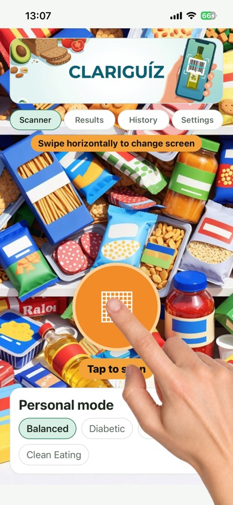

Clariguiz
Faites vos courses avec plus de clarté.
Scannez un code-barres et obtenez un score 0–100 issu de plusieurs systèmes — Nutri-Score, NOVA, MUM et SIGA — pour voir la qualité nutritionnelle et le niveau de transformation, pas seulement une note unique.

Ce que fait l’app
- Alimentation : ingrédients, additifs, ultraprocessés et qualité globale
- Beauté & hygiène : analyse INCI
- Pet food : score dédié pour vos animaux
- Profils : Équilibré, Diabétique, Sportif, Clean
Pourquoi Clariguiz
- Score interpolé — plus fiable qu’un seul indicateur
- Détecte les produits ultraprocessés
- Pet food inclus
- Gratuit, sans compte, aucune donnée personnelle collectée
- Données Open Food / Beauty / Product Facts